Projet noté · TailwindCSS & SASS · ESGI Reims, bac+3
Concevoir et intégrer le site d'un client fictif : de ses utilisateurs à la mise en ligne.
| Étudiant | Fabien Lubin |
|---|---|
| Enseignant | Cédric Navet |
| Site en ligne | https://tptailwind.vercel.app |
| Dépôt Git | https://github.com/MrCoolBay/tptailwind |
| Technique | Vite, React 19, Tailwind CSS 4 (tokens @theme), SASS (sass-embedded, CSS Module + partials @use), Storybook 10 + addon Accessibility |
| Client | Huit Clés (nom fictif, vérifié : aucune enseigne existante trouvée sous ce nom). Escape game, typologie culture et loisirs, centre de Reims. 6 salariés, 8 salles, ouvert 7 jours sur 7. |
|---|---|
| Offres |
|
| Objectif du site | Obtenir des réservations en ligne : faire passer la part des réservations faites sur le site de 40 % à 70 % en 6 mois (le reste arrive aujourd'hui par téléphone). |
| Données | rooms.json : 8 salles (name, theme, story, difficulty 1 à 4, playersMin/playersMax, duration, minAge, wheelchair, slots). pricing.json : la grille de prix par taille de groupe. |
| Ambiance | Mystérieuse, chaleureuse, ludique. Nuit d'encre · Laiton · Vert-de-gris. Titres en Fraunces (serif « affiche ancienne »), texte en Inter. |
Écart avec la fiche de cadrage : le champ image prévu dans rooms.json a été retiré, faute de visuels libres de droits ; la difficulté est représentée par une jauge de cadenas en SVG (décorative, aria-hidden), le niveau étant toujours écrit en toutes lettres.
| Inès | Gérard | |
|---|---|---|
| Qui | 24 ans, étudiante infirmière ; 3 ou 4 escape games par an entre amis | 67 ans, retraité ; n'a jamais fait d'escape game |
| Contexte | dans le tram, téléphone, le soir ; organise pour 5 amis | chez lui, ordinateur portable ; sortie avec sa fille en fauteuil roulant et ses petits-enfants de 9 et 12 ans |
| Ce qu'il veut | une salle « pas trop dure » pour 5, un samedi soir, sans téléphoner | être certain que la salle est accessible et adaptée aux enfants, connaître le prix exact |
| Ce qui gêne | découvrir le prix à la fin, les longs formulaires sur mobile | le jargon, les petits caractères, les informations d'accès cachées |
| Mission | Sur son téléphone, réserver un samedi soir une salle Facile ou Moyenne pour 5 joueurs, en moins de 2 minutes, sans erreur de saisie. | Sur ordinateur, trouver une salle accessible en fauteuil, jouable dès 9 ans, pour 4 joueurs, et lire son prix total, en moins de 3 minutes, sans aide. |
| Parcours | Accueil → Trouver ma salle → Salles (filtres 5 + Facile + Moyen : 5 salles) → fiche → Réserver cette salle (salle et joueurs pré-remplis) → date, créneau, coordonnées → confirmation | Accueil → Salles (filtres fauteuil + 4 : 4 salles) → lecture de l'âge sur les cartes (« dès 8 ans ») → fiche de La Cave aux mille bouteilles → prix : 104 € pour 4 |
| Écran | Rôle | Mission servie |
|---|---|---|
| Accueil | Proposition de valeur (« 8 salles. Une heure pour vous échapper. »), un seul appel à l'action Trouver ma salle, prix d'appel, nombre de salles accessibles, formules, déroulement. | Inès, Gérard |
| Les salles | 8 salles générées depuis le JSON ; 3 filtres combinables (joueurs, difficulté à choix multiples, accessibilité) ; compteur annoncé aux lecteurs d'écran ; prix total sur chaque carte ; fiche détail en modal ; état vide avec sortie. | Inès, Gérard |
| Réserver | Formulaire à labels visibles, validation à la sortie du champ, erreurs près du champ + résumé, état de chargement, confirmation récapitulative. Récapitulatif de prix toujours visible. | Inès |
Navigation : un état React synchronisé avec l'ancre de l'URL (#salles, #reserver), pour que le bouton Retour et le rechargement fonctionnent ; à chaque changement de vue, le focus va sur le titre et le titre de l'onglet change.
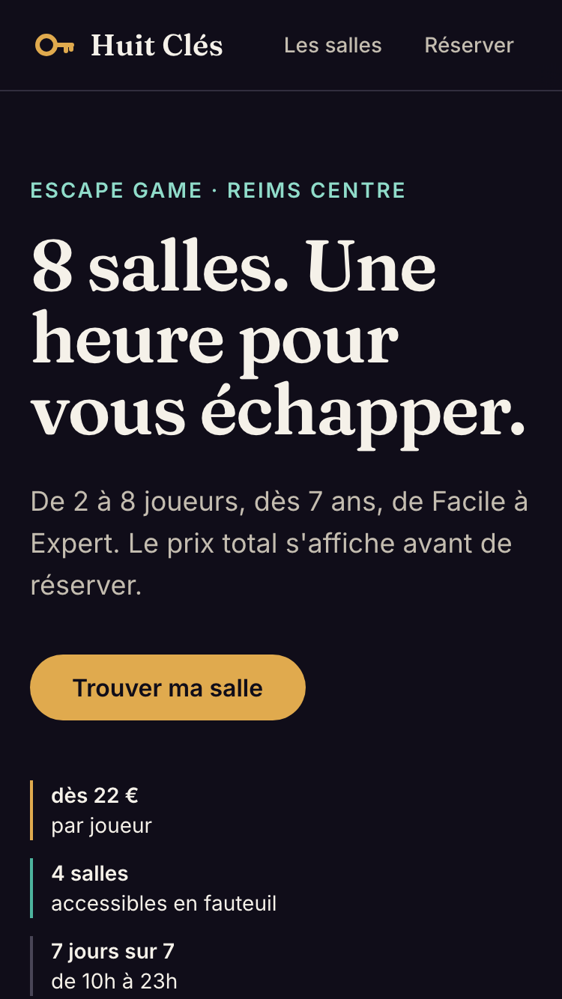
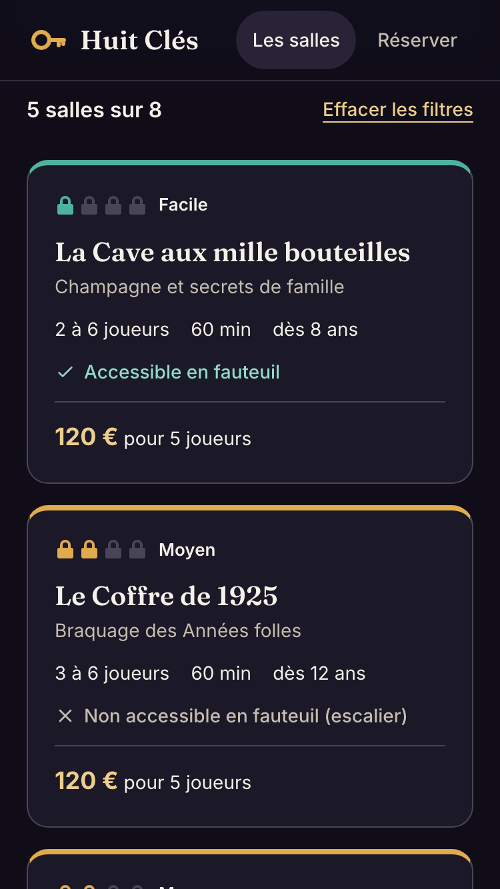
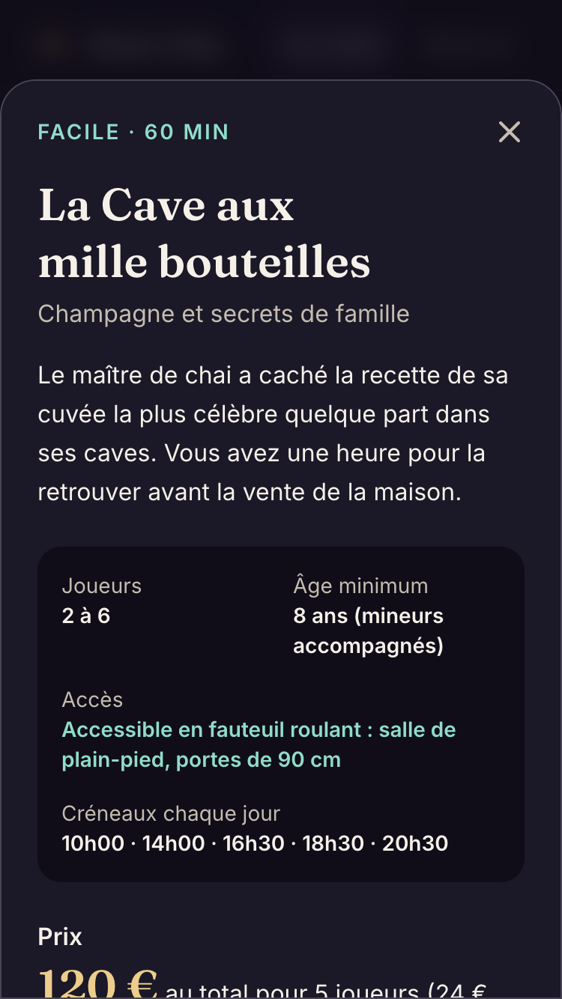
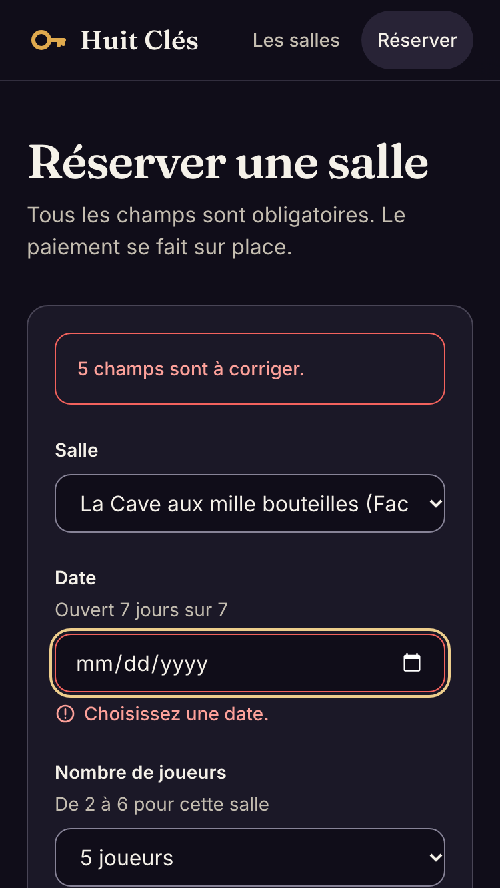
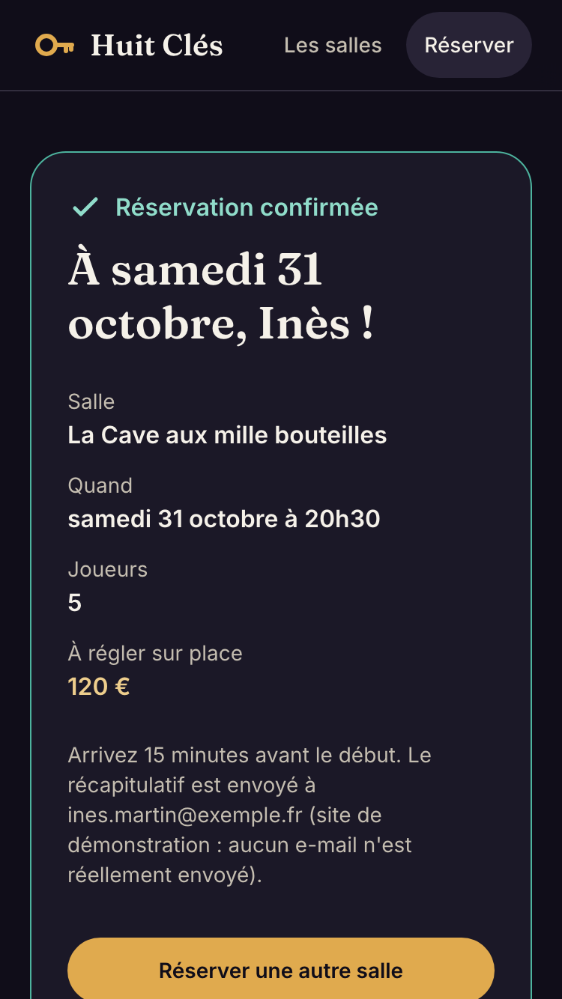
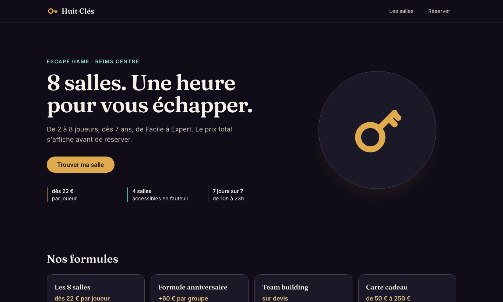
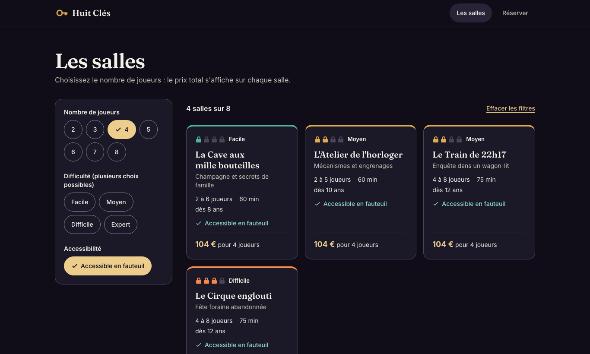
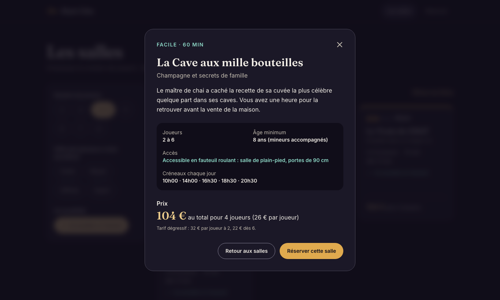
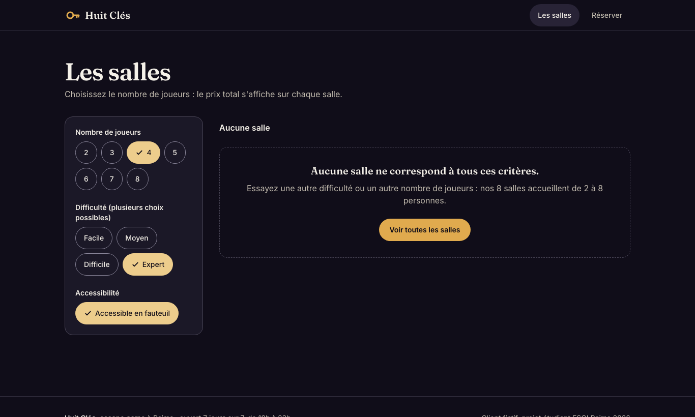
src/style.css, bloc @theme static)| Rôle | Tokens | Contraste vérifié |
|---|---|---|
| Fonds | ink, surface, surface-raised | — |
| Textes | parchment, muted | 17,1:1 et 9,3:1 (min 4,5) |
| Principale (laiton) | brass-300 à brass-600 | texte ink sur bouton brass-400 : 9,1:1 |
| Accent (vert-de-gris) | verdigris-300, verdigris-400 | 11:1 sur surface |
| Sens | ember-400 (difficile), danger-300/400 (expert, erreurs) | erreurs : 8,9:1 |
| Bordures | line (décor), line-strong (champs, puces) | line-strong : 4,7:1 (min 3 pour un composant) |
| Polices | font-display Fraunces, font-sans Inter | 16 px minimum dans les champs (pas de zoom iOS) |
src/components/base/), tous dans Storybook avec leurs états| Composant | API | Stories (états) |
|---|---|---|
Button | variant, size, href (lien ou bouton), loading, disabled | Primary, Secondary, Large, Disabled, Loading, LongLabel, AsLink |
FilterChip | pressed (aria-pressed + coche), disabled | Off, On, Disabled, Group (interactif) |
Field | label, hint, error reliés par aria-describedby, as="select" | Default, WithHint, Filled, Error, Disabled, Select |
RoomCard | room, players (prix total), onOpen | Facile, Moyen, Difficile, Expert, WithGroupPrice, NotAccessible, LongContent, Grid |
RoomCard.module.scss. Les partials _tokens.scss (map $difficulties qui pointe vers les variables CSS de @theme) et _mixins.scss (focus-ring, touch-target) sont chargés avec @use. Une boucle @each génère les 4 classes .level-1 à .level-4, qui ne changent qu'une variable : --level-color (bandeau et cadenas). Le JSX associe le niveau à sa classe par un objet écrit en entier, sans nom de classe construit.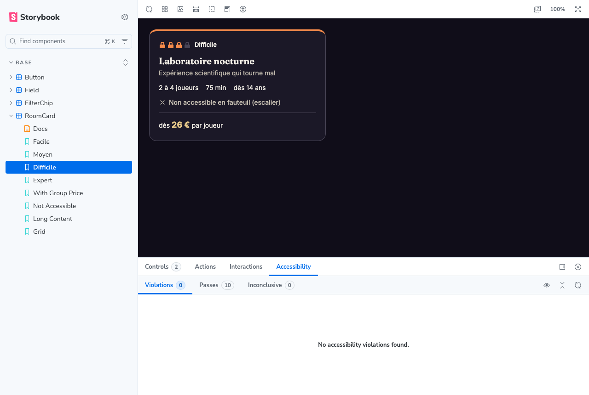
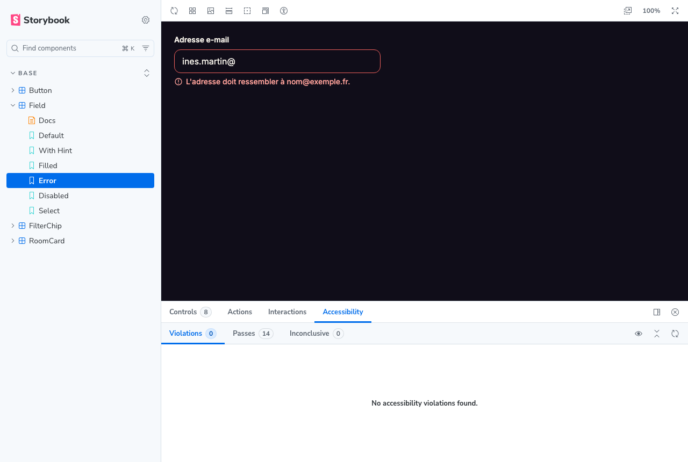
25 stories auditées automatiquement avec axe-core (règles WCAG 2.1 A et AA) : 0 violation.
Protocole : la personne ne connaît pas le site. On lui donne uniquement la mission, sur l'appareil du persona, et on lui demande de penser à voix haute. On ne l'aide pas, on chronomètre, on note les hésitations. Puis on corrige le problème le plus gênant et on refait le test.
| Test 1 : mission d'Inès (téléphone) | Test 2 : mission de Gérard (ordinateur) | |
|---|---|---|
| Qui | prénom, âge, lien | prénom, âge, lien |
| Temps | … s (objectif < 2 min) | … s (objectif < 3 min) |
| Réussite | Oui, sans erreur de saisie, nettement sous l'objectif de 2 minutes | Oui, bonne salle et bon prix, nettement sous l'objectif de 3 minutes |
| Observé | Parcours direct, sans hésitation notable | Parcours direct, sans hésitation notable |
| Corrigé | Aucun blocage observé : pas de correction nécessaire après les tests. Les défauts corrigés avant les tests (contrastes, variante Difficile, robots.txt) sont détaillés en partie 7. | |
Avant les tests humains, les deux parcours ont été rejoués automatiquement (Playwright, 375 px et 1366 px) pour vérifier qu'ils fonctionnent : Inès obtient 5 salles, sa réservation est pré-remplie (salle, 5 joueurs) et confirmée à 120 € ; Gérard obtient 4 salles, une seule dès 9 ans, à 104 € pour 4. Ce rejeu vérifie le code, il ne remplace pas un test utilisateur.
Mesure sur la version en ligne (https://tptailwind.vercel.app), mode mobile, le 26 octobre 2026. En local, avant les corrections : performance 98, SEO 91.
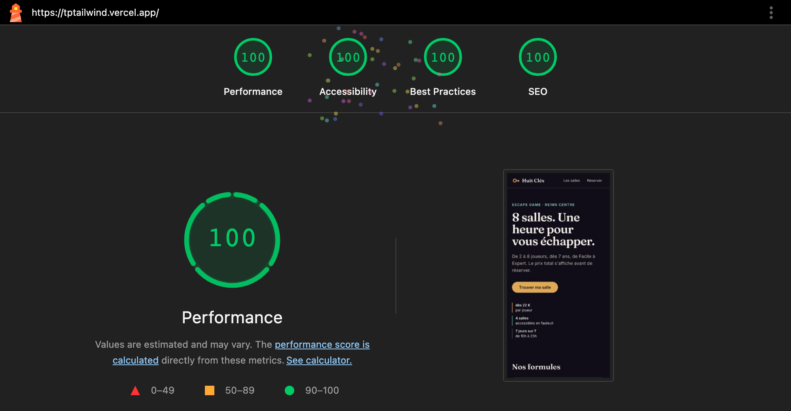
| Constat | Correction |
|---|---|
Lighthouse SEO à 91 : robots.txt invalide | Ajout de public/robots.txt : SEO à 100. |
| Bords des champs et des puces à 2:1 (WCAG 1.4.11 demande 3:1) | Nouveau token line-strong (4,7:1) pour les bords interactifs ; line reste pour le décor. |
| Variante « Difficile » sans couleur | Tailwind 4 n'émet que les variables utilisées par une classe ; ember-400 n'était utilisée que par le SASS. Passage à @theme static. |
<dialog> natif (focus piégé, Échap ferme, focus rendu à la carte) ; lien « Aller au contenu ».min-h-11) : boutons, puces, liens de navigation, créneaux ; la carte entière est cliquable.role="alert"), chargement (aria-busy, libellé « Envoi de la réservation… »), succès.head : lang="fr", title et meta description propres au client, titre d'onglet par vue.| Outil | Claude (Anthropic), via Claude Code dans le terminal. |
|---|---|
| Ma méthode | Je n'ai pas laissé l'IA coder directement : je lui ai d'abord fait lire la feuille de projet, poser ses questions et proposer un plan par étapes, et je n'ai lancé la production qu'après l'avoir validé. J'ai exigé un travail « propre » : un commit par étape, et des vérifications automatiques plutôt qu'un contrôle à l'œil. |
| Mes décisions | Le client (escape game, parmi 4 pistes proposées), l'hébergement (GitHub + Vercel), le rythme du projet, et la validation de chaque livrable. |
| Ce que l'IA a produit | Propositions de clients et fiche de cadrage ; tokens, données JSON, composants, stories et écrans ; scripts de vérification (contrastes, axe, Lighthouse, parcours automatisés) ; captures et mise en page de ce dossier. |
| Ce que les vérifications ont fait corriger | Trois défauts que l'œil n'avait pas vus (partie 7) : la variante Difficile sans couleur, des bordures de champs sous 3:1, un robots.txt manquant. Une première proposition de nom de client (« Sous Scellés ») a aussi été écartée parce qu'elle correspondait à une marque existante. |
| Ce que j'ai fait moi-même | Les deux tests utilisateurs avec de vraies personnes, la création du dépôt GitHub, la mise en ligne, et la relecture du code pour pouvoir l'expliquer et le modifier à l'épreuve. |